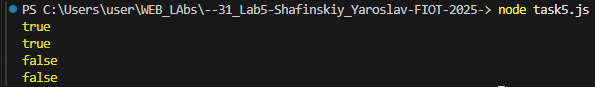

function checkBrackets(str) { const stack = []; const brackets = { ")": "(", "}": "{", "]": "[" }; for (let char of str) { // Якщо відкриваюча — кладемо в стек if (char === "(" || char === "{" || char === "[") { stack.push(char); } // Якщо закриваюча — перевіряємо відповідність if (char === ")" || char === "}" || char === "]") { if (stack.pop() !== brackets[char]) { return false; // неправильне закриття } } } return stack.length === 0; // якщо стек пустий — все ок } console.log(checkBrackets("function test() { return [1, 2, 3]; }")); // true console.log(checkBrackets("( [ ] { } )")); // true console.log(checkBrackets("( [ ) ]")); // false console.log(checkBrackets("function x() { if(a[2]) { return; }")); // false (не закрита дужка)
